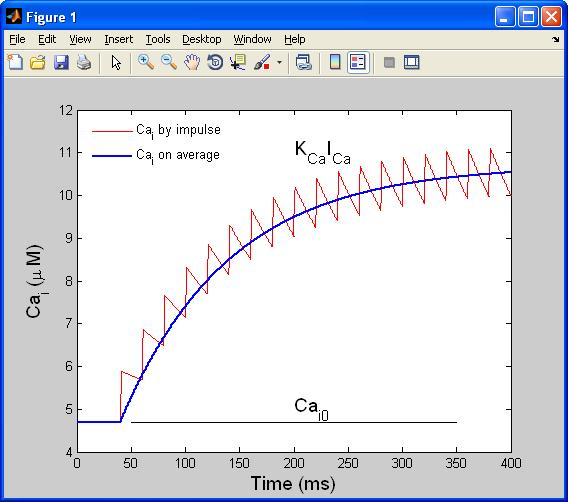
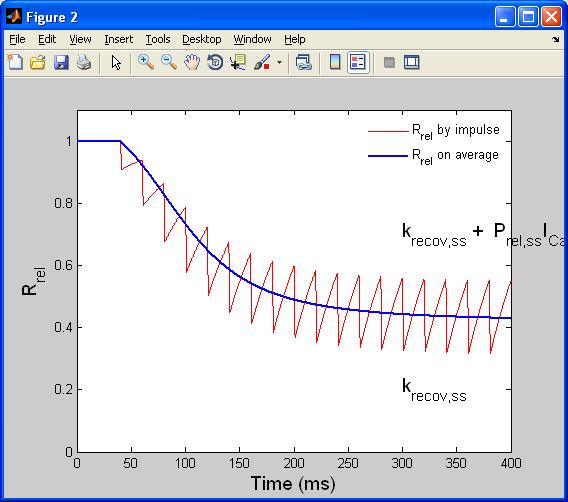
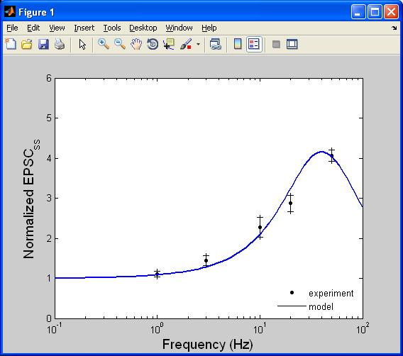
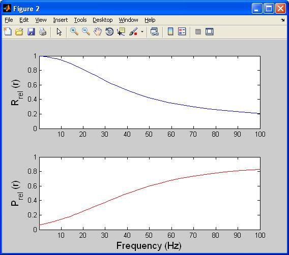
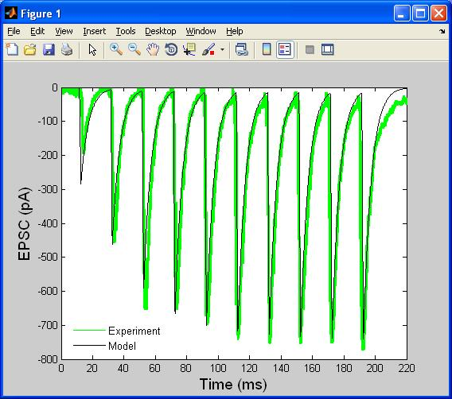
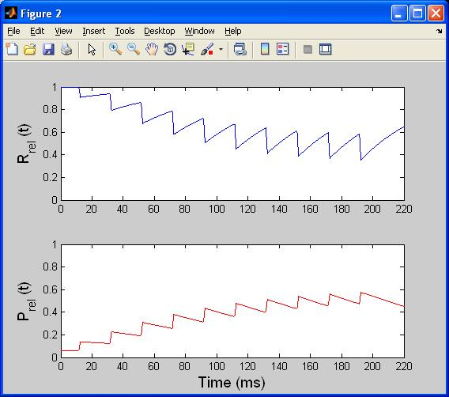

This file folder contains the supplemental codes for the manuscript: Lee, C.-C., Anton, M., Poon, C.-S., and McRae G. J. (2009) The Unified Theory of Homosynaptic Short Term Depression and Facilitation, J. Comput. Neurosci. 26(3):459-473. Files in the main directory are either the .m for standard Matlab codes or .sml of Simulink Model files. In addition, "Input" folder includes the experimental transient responses of synapses under faciliation and mixture effects; "Output" folder contains the simulation results output by Simulink files. Here is the list describing the contents of individual .m and .sml files. The first points below contain examples of how the matlab code corresponds to the paper figures. 1. Analytical_freq_sim.mdl and Analytical_freq.m: This file set calculates the transient response of presynapses by both simulation and average approximation. Running analytic_freq from the matlab command line reproduces figures 2a,b:   2. Facilitation.mdl, facilitation_freq.m, facilitation_presyn.m, facilitation_temp.m: This file set generates the transient and frequency EPSC responses of facilitating synapses. The Probability of release and Ratio of realeasable vehsicle resposes are also output. Running facilitation_freq generates figure 3a,b:   and facilitation_temp generates figures 3c,d:   3. Depression.mdl, depression_freq.m, depression_presyn.m, depression_temp.m: This file set generates the transient and frequency EPSC responses of depressing synapses. The Probability of release and Ratio of realeasable vehsicle resposes are also output. 4. Mixture.mdl, mixture_freq.m, mixture_presyn.m, mixture_temp.m: This file set generates the transient and frequency EPSP responses of facilitating synapses. The Probability of release and Ratio of realeasable vehsicle resposes are also output. 5. resonance_freq_2D.m and resonance_freq_3D.m: These two files calculate the resonance frequency response of synapses with different parameters and plots its 2D and 3D responses, respectively. In addition, resonance_freq_3D.m generates the perturbation surfaces, resonance frequency, and the bandwidth of frequency response.